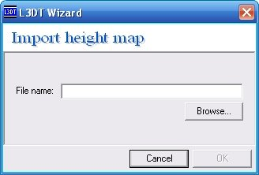

L3DT is an application well suited to the purpose of creating terrains for TGEA's Atlas Engine. Its available FREE without royalties or other restrictions of use.
It can be downloaded from the L3DT website.
There are 3 available methods of generating terrains with L3DT, the first 2 are from within L3DT and the third method is via importing a heightfield to L3DT. See below for details. 1. Creating a Heightfield/Terrain
This is not a complete tutorial on all the options available within L3DT, but an overview of important things as they relate to creating an Atlas Terrain.
During the map generation process of L3DT the following maps will be created, the ones in bold have potential use in relation to TGEA; Design Map, Heightfield, Water Map, Salinity Map, Attributes Map, Terrain Normals, Light Map, Texture Map.
Heightfield - Covered directly below. Terrain Normals - Doing a search in the forums for 'Normals' and 'Atlas' will bring up results. Light Map - This is useful in the production of terrain textures, see Texture from GIS Data below. Texture Map - This is obvious and covered below in Texture From within L3DT.
Start by creating a new map in L3DT. File-->New Map
Then select one of the four Terrain Algorithms.
The Design/inflate (blank) gives 2 options, a) to design your own heightfield within L3DT and b) allows you to import your own external heightfield. The other three provide an automated method of creating your terrain.
Continuing on through the process by continually pressing the next button will provide you with a number of options that are covered in the L3DT online documentation over at BundySoft.
Step 1. Image Preparation
Export your DEM (Digital Environment Map) data from your favourite GIS program in any supported image format ensuring its shades of grey obviously, L3DT supports JPEG, PNG and BMP. Ensure that it is square and of a size supported by L3DT (i.e. 256, 384, 512, 768, 1024, 1536 or 2048).
Flip this image vertically in any image manipulation program (This image is reorientated back when exported to the RAW format from L3DT).
Step 2. Create Design Map in L3DT
Start by creating a new map in L3DT. File-->New Map
Select 'Design/inflate (blank)' from the pop-up dialog.
In the second dialog you will define the size of your map.
X = 16, Y = 16 gives you a 1024 x 1024 map
X = 32, Y = 32 gives you a 2048 x 2048 map
By default the heightfield resolution is 10, the number you put in for your heightfield resolution is the same number you will be putting for your square size when you convert .RAW to .chu within TGEA. I use 1 for TGEA's scale, 1km x 1km (if you put 10, the map will be ten times larger).
Step 3. Import Heightfield
Import your heightfield by going to File-->Import-->Heightfield.

Set the altitude minimum and maximum in metres, the 'Horiz scale' should be the same as the 'Heightfield resolution' in the previous step.
Step 1. Resize Map
Atlas requires the source .RAW file to be one pixel larger so resize the Heightfield map by going to Operations-->Heightfield-->Resample map and adding 1 to your map's Width and Height.
Step 2. Export Heightfield
Make sure the Heightfield is the active map View-->Show map-->Heightfield then export by going File-->Export-->Active map. Set the File format to RAW and set the file name and path to your project folder's /data/terrains
Note: L3DT flips the heightfield vertically when exporting the .RAW file, to remedy this you have a number of options available. a) Open your .RAW in an image manipulation program (Photoshop, GIMP etc) and flip it vertically then resave, b) flip your texture file vertically when you export it and leave the heightfield as is, or c) export the heightfield as a jpg (omitting step 1, resizing) then follow the 'From GIS Data' section above.
NB: The version 2.4 betas do not require the texture map to be flipped. It maps to the terrain perfectly with no changes.
Step 3. Divide your Heightfield's horizontal scales by 65536 to find the vertscale to use when converting your .RAW to .CHU in TGEA.
As an alternative to step 3 you can open up the l3dt viewer application and read the scale from there.
It is found under "View->Map Group Tree View" and selecting Height Field in the tree. The "Vertical Scale" factor is the one that you plot into atlasOldGenerateChunkFileFromRaw16() as the 4th parameter.
For details on how to generate the .CHU file in TGEA refer to the TGEA/Atlas/Overview and I highly recommend this Atlas Import GUI.
The first option when creating the texture map is the Light Mapping, the 'Additional Notes' below will help in understanding the direction with the elevation being quite obvious. The Sun Colour and Ambient Colour are also quite obvious, experimenting with their settings and find your desired result. Remember to match their look with the lighting within TGEA.
The second dialog box involves 2 options, whether to add the Shadows from the light map to the terrain texture and whether to add water effects. The first option I would keep checked, although the potential exists that with the introduction of dynamic lighting and baked in shadows in a future version of TGEA this option will become redundant.
With the up coming water shader created for TGEA that calculates the depth of the terrain below the water and darkens accordingly, I would opt out of adding water effects to the texture (i.e. This option has become redundant).
Make sure the Texture Map is the active map View-->Show map-->Texture Map then export by going File-->Export-->Active map. Set the File format to JPG and set the file name and path to your project folder's /data/terrains
Note. This process may become redundant with the addition of 'Dynamic Lighting' to TGEA, assuming it will contain terrain lighting.
If you are using an aerial photograph as a base for your terrain, this process will be quick a painless.
Continue through L3DT until you generate a lightmap, this is what you'll be needing, same this map out as a .JPG
Open up your aerial photograph in any image manipulation program that supports layers (e.g Photoshop, GIMP), ensure its the same size as your original heightfield image and its square. Also load up your lightmap and make it a layer above your aerial images and change its mode to 'Multiply' (i.e. make the white areas transparent leaving the shadows).
Flatten your image and save it out.
The following commands will convert your generated heightmap and texture into an Atlas2 terrain.
atlasOldGenerateChunkFileFromRaw16("game/data/terrains/terrain/heightmap16bit.raw", 2048, 5.0, 0.0158, "game/data/terrains/geometry.chu", 1.5, 3);
The heighfield in this example uses a 2048x2048 pixel size (2049 minus the 1 pixel extra), a horizontal scale of 5, a vertical scale of 0.0158 (1038/65535). Note the tree leaf size of 3, as we have to use that later.
importOldAtlasCHU("game/data/terrains/geometry.chu", "game/data/terrains/geometry.atlas"); atlasGenerateTextureTOCFromLargeJPEG("game/data/terrains/terrain/textureCWM.jpg", 3, "game/data/terrains/texture.atlas");
The 3 is the same leaf size as mentioned above
atlasGenerateUniqueTerrain("game/data/terrains/myTerrain.atlas", "game/data/terrains/geometry.atlas", "game/data/terrains/texture.atlas");
Thats it! Add the myTerrain datablock to the mission file and you are ready to go.
L3DT Map Lighting
Within L3DT, for lighting land in the northern hemisphere it ranges from Direction 90 degrees (east) through 180 degrees (south) around to 270 degrees (west), in the Southern Hemisphere it ranges from 90 degrees (east) through 0 degrees (north) to 270 degrees (west), with the elevation depending upon which latitude the land is located, the date and time of day.